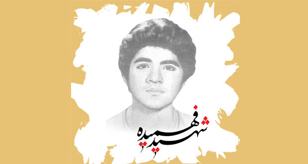

محمد حسین فهمیده (۱۶ اردیبهشت ۱۳۴۶–۸ آبان ۱۳۵۹) یک رزمندهٔ ایرانی در جنگ ایران و عراق بود که در ۱۳ سالگی در حین عملیات انتحاری علیه تانکهای عراقی کشته شد.
محمد حسین فهمیده در ۱۶ اردیبهشت ۱۳۴۶ در محله پامنار شهر قم زاده شد. در سال ۱۳۵۲ به دبستان «روحانی» قم یا همان دبستان کریمی قدیم وارد شد و از مهرماه سال ۱۳۵۶ تحصیلاتش را در مدرسه راهنمایی حافظ در شهر قم ادامه داد. سپس به همراه خانوادهاش به کرج مهاجرت کرد و از مهرماه ۱۳۵۸ در مدرسه خیابانی مشغول به تحصیل شد
محمد حسین نوجوانی خوش برخورد، شجاع، فعال، کوشا بود و به مطالعه علاقه زیادی داشت و با وجود این که به سن تکلیف نرسیده بود، نماز میخواند و احترام خاصی برای والدینش قایل بود
شهید فهمیده دوازده ساله بود که حوادث کردستان اتفاق افتاد. خود را به کردستان رساند ولی به دلیل کمی سن، برادران کمیته او را بازمیگردانند و درصدد برمی آیند که در حضور مادرش از او تعهد بگیرند که دیگر از شهرستان کرج خارج نشود. ولی او رضایت نمی دهد و خطاب به آنان میگوید که خودتان را زحمت ندهید. اگر امام بگوید به هر کجا که باشد، آماده رفتن هستم.
دفاع مقدس
شهید محمدحسین فهمیده (۱۳۴۶-۱۳۵۹ ش) نوجوان ۱۳ ساله ای بود که در جنگ تحمیلی با شجاعت بسیار نارنجک به کمر بست و زیر تانک دشمن رفت و با گذشتن از جان خود، پیروزی و حماسه آفرید. این دانش آموز رزمنده بسیجی با ایمان و بینش عمیق خود در جنگ با دشمن پیش قدم شد و با نیل به شهادت، درس شجاعت، فداکاری و مقاومت را به همه بسیجیان و امت حزب الله آموخت. امام خمینی از این نوجوان ۱۳ ساله به عنوان رهبر یاد فرمود و بدین گونه نام و یاد او، منشا حماسههای بزرگ شد و تحول عظیمی در شیوههای دفاع مقدس و نبرد رزمندگان اسلام ایجاد کرد و راه پیروزی و سرافرازی را یکی پس از دیگری، هموار ساخت.
در همان روزهای نخست جنگ تحمیلی، محمدحسین تصمیم میگیرد که به جبهه برود و با متجاوزان بعثی عراق بجنگد. زمزمه رفتن را در خانواده و بین دوستانش میافکند. در یکی از بیمارستان های کرج خود را به یکی از دوستانش که بستری بود، میرساند و با او خداحافظی می کند و از جبهه و جنگ برای او می گوید و تکلیف الهی خود را گوشزد می کند. یک روز که به بهانه خرید نان از منزل خارج شده بود، مبلغ ۵۰ تومان را به دوستش میدهد و از او میخواهد که نان را بخرد و به منزل آنها ببرد و تصمیم خود را برای رفتن به خوزستان به او میگوید و از وی میخواهد که تا سه روز به خانوادهاش خبر ندهد تا مانع رفتن او نشوند و سپس آنها را مطلع کند. در تهران یکی از پاسداران کمیته متوجه تصمیم او شده و با وی صحبت و سعی میکند او را از تصمیم خویش منصرف نماید، اما موفق نمی شود. شهید فهمیده که در عزم خود راسخ بود، خود را به شهرهای جنوب کشور می رساند و هر چه تلاش می کند که همراه گروه یا دسته ای که عازم خطوط مقدم جبهه هستند برود، موفق نمی شود. تا با گروهی از دانشجویان انقلابی دانشکده افسری برخورد کرده و به نزد فرمانده آنان می رود و از او می خواهد که وی را با خود ببرند. فرمانده امتناع می کند، اما شهید فهمیده آنقدر اصرار می کند تا فرمانده را متقاعد می کند که برای یک هفته او را همراه خود به خرمشهر ببرد. در این مدت کوتاه هر کاری که پیش میآید حسین پیشقدم شده و استعداد و قابلیت خود را در همه کارها نشان می دهد. در همین مدت کوتاه حضور در خرمشهر با دوستش به نام محمدرضا شمس، مجروح می شوند و آن دو را به بیمارستان منتقل میکنند و علی رغم مخالفت فرمانده آن گروه و با حالت مجروحیت، دوباره به خطوط مقدم در خرمشهر برمیگردد. در حین برخورد با فرمانده و پس از ممانعت وی از حضور در خط مقدم، چشمان حسین پر از اشک شده و با ناراحتی به فرمانده میگوید: من به شما ثابت میکنم که میتوانم به خط بروم و لیاقت آن را دارم. او برای اثبات لیاقت خود یک بار به تنهایی به میان عراقی ها رفته و لباس و اسلحهای از عراقی ها بدست میآورد و در هیئت یک عراقی به نیروهای خودی نزدیک میشود، به طوری که رزمندگان مشاهده میکنند که یک عراقی کوچک به طرف آنان می آید! می خواهند به او شلیک کنند که یکی از آنان می گوید، صبر کنید با پای خودش بیاید تا اسیرش کنیم. هنگامی که نزدیک میشود، میبینند حسین است که خواسته ثابت کند که می تواند با دست خالی هم با عراقی ها بجنگد و شهامت و لیاقت حضور در خط مقدم را دارد. مسئول گروه که به توانمندی و توانایی و اراده پولادین حسین برای رزم در جبهه اعتماد و اطمینان پیدا میکند، به او اجازه ماندن در جبهه را میدهد.
.jpg)
شهادت
محمدحسین پس از ابراز شایستگی هایش در جنگ، به اتفاق دوست شهیدش محمدرضا شمس، در یک سنگر قرار داشتند که در هجوم عراقی ها به خرمشهر محاصره میشوند. محمدرضا شمس، دوست و همسنگر حسین زخمی میشود و حسین باسختی و زحمت زیاد او را به پشت خط می رساند و به سنگر خود برمیگردد و می بیند که تانکهای عراقی به طرف رزمندگان اسلام هجوم آورده و در صدد محاصره آنها هستند. حسین در حالی که تعدادی نارنجک به کمرش بسته و در دستش گرفته بود به طرف تانک ها حرکت می کند. تیری به پای او میخورد و از ناحیه پا مجروح میشود. اما زخم گلوله نمی تواند از اراده محکم و عزم پولادین او جلوگیری نماید. بدون هیچ دغدغه و تردیدی تصمیم خود را عملی میکند و از لابه لای امواج تیر که از هر سو به طرف او می آمد، خود را به تانک پیش رو می رساند و آن را منفجر میکند و خود نیز تکه تکه می شود. افراد دشمن گمان می کنند که حمله ای از سوی نیروهای ایرانی صورت گرفته است، جملگی روحیه خود را می بازند و با سرعت تانکها را رها کرده و فرار میکنند. در نتیجه حلقه محاصره شکسته می شود و نیروهای کمکی هم میرسند و آن قسمت را از وجود متجاوزان پاکسازی می کنند. هشتم آبان به عنوان «روز بسیج دانشآموزی» و همچنین روز ۱۳ آبان به افتخار او به عنوان «روز دانشآموز» در ایران نامگذاری شد و سازمانی به همین نام زیر نظر بسیج مستضعفین تشکیل شد. اشیای بازمانده از شهید حسین فهمیده در موزه شهدای تهران نگهداری میشود.
نظر بزرگان درباره شهید فهمیده
امام خمینی (قدس سره) در پیامی که به مناسبت دومین سالگرد پیروزی انقلاب اسلامی صادر می کنند، جملات معروفی را پیرامون شهید فهمیده بیان میفرماید: «رهبر ما آن طفل سیزده ساله ای است که با قلب کوچک خود که ارزشش از صدها زبان و قلم بزرگتر است، با نارنجک خود را زیر تانک دشمن انداخت و آن را منهدم نمود و خود نیز شربت شهادت نوشید». مقام معظم رهبری آیت الله العظمی خامنه ای در مورد شهید فهمیده میفرماید: «زنده نگه داشتن یاد حادثه شهادت دانش آموز بسیجی، شهید فهمیده، از اصالت های دفاع مقدس می باشد». ایشان همچنین در دیدار با خانواده محمدحسین در رابطه با فداکاری و شجاعت او فرمودند: «بروز چنین حوادثی که از تربیت صحیح و اصالت های خانوادگی است، صرفاً در محیط های اسلامی جلوه گری و نورافشانی میکند». سید شهیدان اهل قلم، شهید مرتضی آوینی در قسمتی از برنامه پنجم «روایت فتح»، شهادت محمدحسین فهمیده را این گونه زیبا ترسیم میکند: «خرمشهر از همان آغاز خونین شهر شده بود ... آنان در غربت جنگیدند و با مظلومیت به شهادت رسیدند و پیکرهای شان زیر تانک های شیطان تکه تکه شد و به آب و باد و خاک و آتش پیوست. اما... راز خون آشکار شد. راز خون را جز شهدا درنمی یابند. گردش خون در رگهای زندگی شیرین است. اما ریختن آن در پای محبوب، شیرین تر.. . شایستگان آنانند که قلبشان را عشق تا آنجا انباشته است که ترس از مرگ جایی برای ماندن ندارد. شایستگان جاودانانند...».